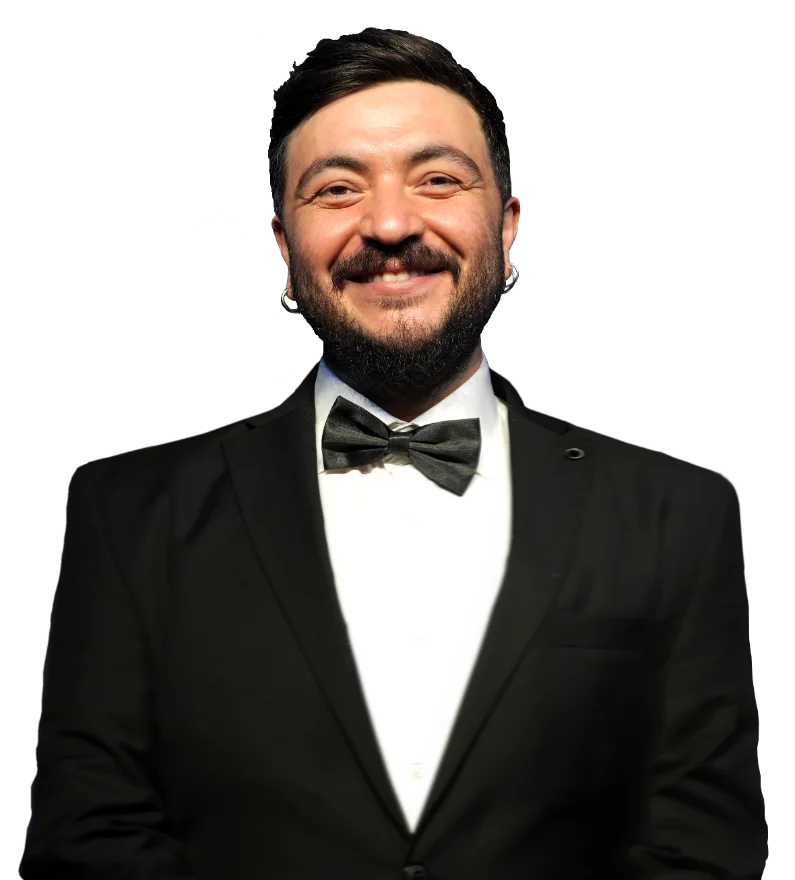
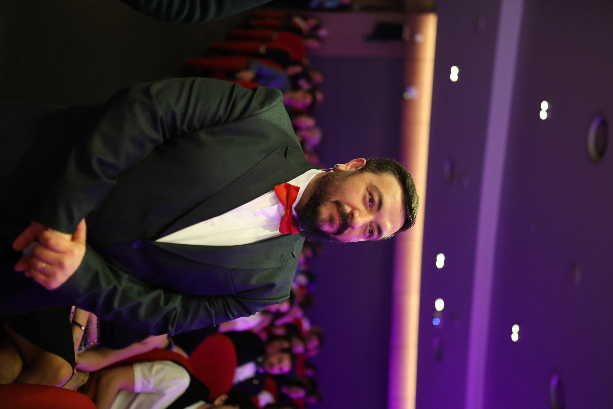
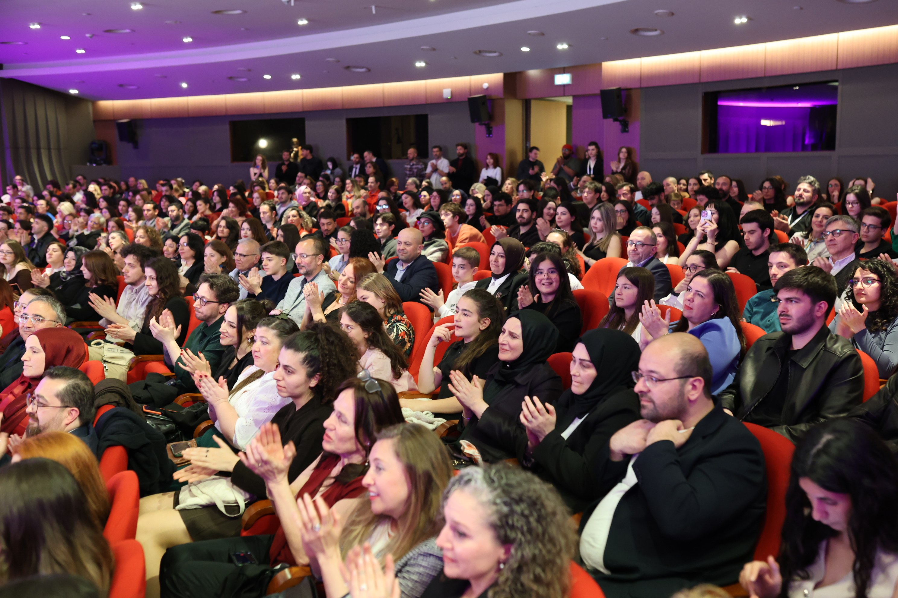
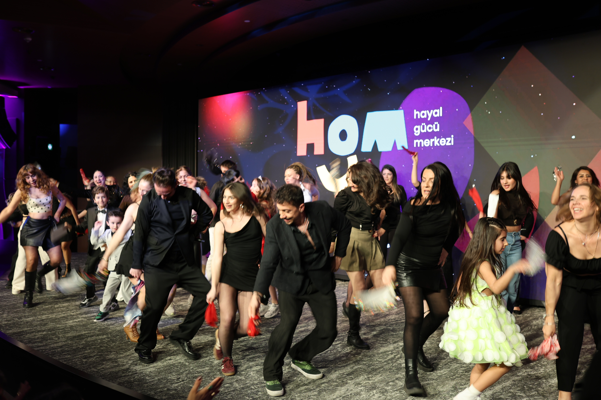
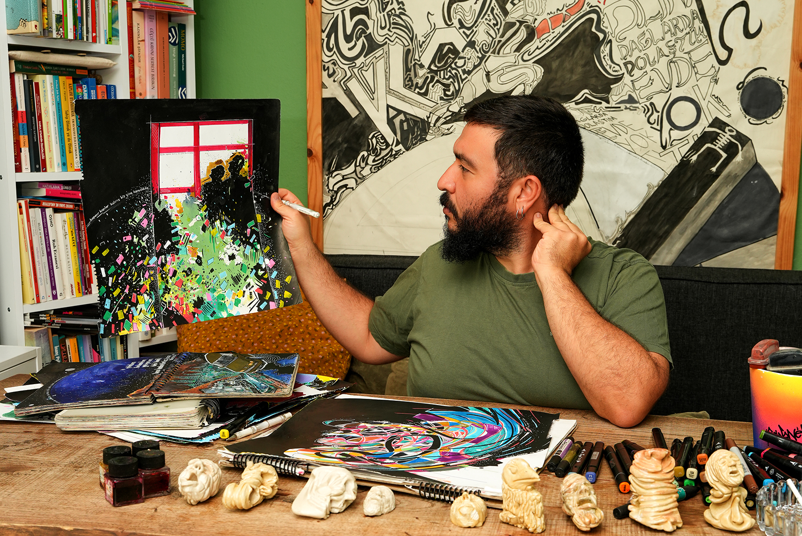
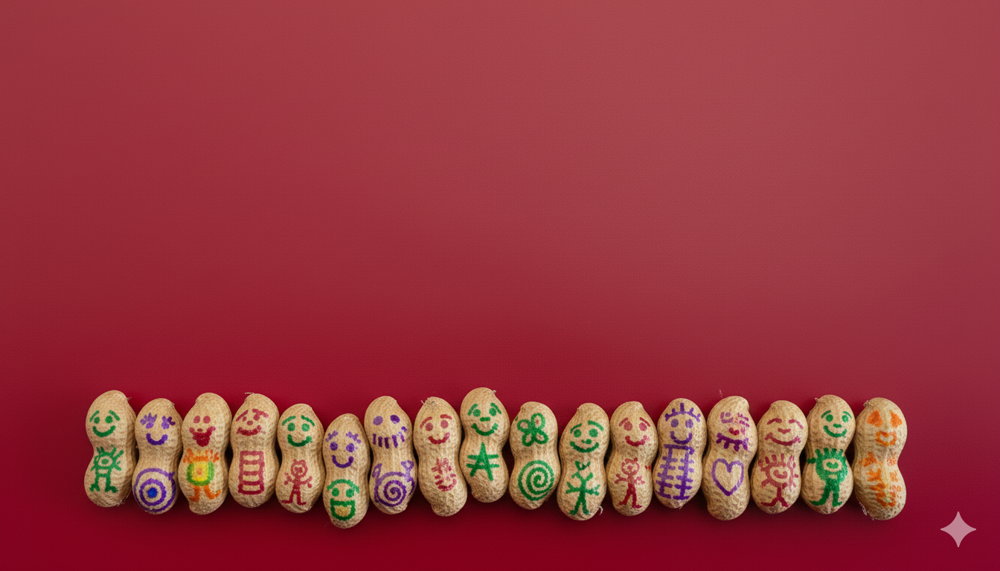
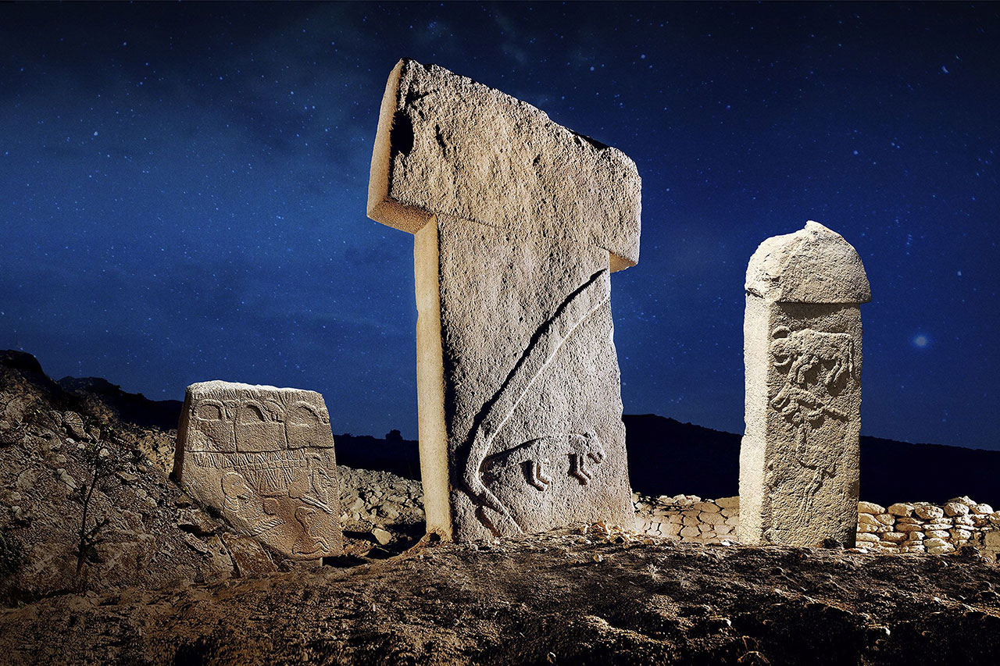

2026 ·
İstanbul
Merakı ve hayal gücünü merak eden biri.

Emre Alettin Keskin
Yedi soru, yolculuğun yedi farklı kapısı. Hangisinden girersen, oradan başlıyorsun.
girişimler
ne kurduk?
01
Hayal Gücü
Merkezi2012'de Van'da, bir
okulun bodrum katında çocuklarla birlikte kurduk. Çocuğun kendi sorusunun masaya geldiği, çizim,
tasarım ve üretim atölyelerinden oluşan yeni nesil bir öğrenme mekanı. Bugün farklı şehirlerde,
farklı okullarda kuruluyor.
2012 → · sosyal girişim · çok
mekanlı
02
Yeni Nesil
ÖğrenmeKhan Academy iş
birliğiyle kurduğumuz, teknolojiyi merak pedagojisiyle buluşturan bir eğitimci topluluğu.
Öğretmenlerin birbirinden öğrendiği, uygulamayı sahada denediği bir ağ.
2017 → · topluluk · Khan Academy
03
Hayal Gücü
ÖdülleriKendi çevresinde bir
merak ateşi yakan çocukları, öğretmenleri ve toplulukları görünür kılan bir ödül programı. Amaç
madalya vermek değil; iyi örneği çoğaltmak.
2023 → · ödül programı
04
hmmmOyun tabanlı bir
sosyal öğrenme platformu. Çocukların merakını bir oyunun mekaniğine çeviriyor; öğrenmeyi bir görev
listesi değil, bir keşif oyunu hâline getiriyor.
2023 → · dijital platform
05
PodkidsÇocukların hem
dinleyici hem anlatıcı olduğu bir çocuk medyası. Sorular çocuklardan, cevaplar merakın peşinden
geliyor.
2024 → · çocuk medyası


sahnede
Veri değil duygu, şema değil karşılaşma.
İki yüze yakın konuşma. TEDx'lerden kurum içi zirvelere, üniversitelerden belediye forumlarına.
merak ve yaratıcılık nasıl artırılır?
insanın öğrenme yolculuğu
hayalini gücüne çevir
geleceğin sahipleri, gelecekten haber veriyor

birlikte yürüdüklerim
kurum · marka · vakıf












/şu-an ·
temmuz 2026
Çanakkale'deyim, Kocaköy'de. Aklımda Sarıyer Hayal Gücü Merkezi'nin kuruluş işleri var. Defterimde tamamlanmayı bekleyen bir defter.
son soru
beraber ne yapabiliriz?
Konuşma, atölye, danışmanlık ya da yalnızca bir merak. Hepsi aynı kapıdan giriyor.